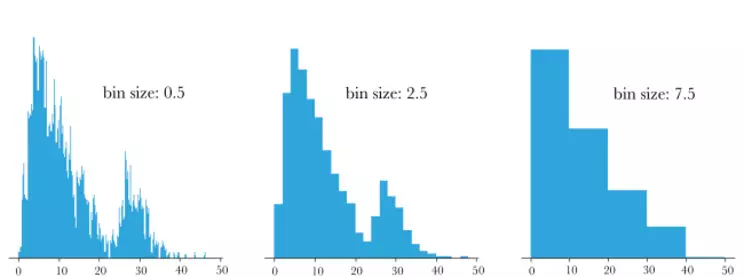
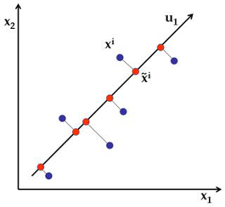

O que é uma Anomalia?
- Comportamento incomum ou inesperado em dados.
- Pode indicar erros, fraudes, falhas ou eventos raros.
- Importante em áreas como segurança, manutenção e finanças.
Anomalias Globais
- Também chamadas de "outliers pontuais".
- Observações que são incomuns em relação a todo o conjunto de dados.
- Fácil de identificar visualmente em muitas situações.
Anomalias Locais
- Também chamadas de "anomalias contextuais".
- Observações normais no geral, mas anômalas em um grupo específico.
- Mais difíceis de detectar, requerem conhecimento do contexto.
Tipos de Detecção
- Supervisionada: com rótulos (normal x anômalo)
- Não supervisionada: sem rótulos, busca padrões inesperados
Algoritmos Populares
- ECOD - Empirical Cumulative Outlier Detection
- COPOD - Copula-Based Outlier Detection
- LODA - Lightweight Online Detector of Anomalies
ECOD

ECOD
Baseado na distribuição empírica acumulada das variáveis.
- Método não supervisionado
- Analisa cada variável individualmente.
- Calcula a probabilidade acumulada empírica para cada ponto.
- Valores extremos (com baixa probabilidade acumulada) são considerados anômalos.
Calculando ECOD para um conjunto de dados
Passo 1: Calcular ECDF para cada variável
Para cada variável, ordenamos os valores e calculamos a função ECDF (basicamente rank normalizado [0,1]):
Passo 2: Calcular as probabilidades de cauda
A distância do ponto para as caudas da distribuição (rank inferior e superior):
Passo 3: Calcular a pontuação ECOD
Passo 4: Combinar as pontuações das variáveis
ECOD combina as pontuações de anomalia para cada variável como padrão usa-se a soma das pontuações.
Passo 5: Definir um limiar para classificar anomalias
Com a pontuação final, escolhe-se um limiar para separar normais de anômalos:
- Pontos com pontuação abaixo do limiar são considerados anômalos.
- O limiar pode ser ajustado dependendo da sensibilidade desejada.
Resumo do ECOD
- Calcular ECDF para cada variável.
- Obter probabilidades das caudas inferior e superior.
- Combinar probabilidades assumindo independência.
- Aplicar limiar para identificar anomalias.
COPOD
Usa cópulas estatísticas para modelar a distribuição conjunta das variáveis.
- Capta dependências entre variáveis.
- Mais robusto a correlações complexas.
COPOD: Visão Geral
Basicamente a mesma coisa de ECOD, o que muda é como calcular o escore.
O que é o LODA?
- LODA significa Lightweight Online Detector of Anomalies.
- Algoritmo não supervisionado para detecção de anomalias.
- Baseado em histogramas unidimensionais de projeções aleatórias dos dados.
Intuição por trás do LODA
Se projetarmos dados em um vetor (assim como fizemos na PCA), reduzimos a dimensionalidade da análise
Assim vamos ter um conjunto de histogramas unidimensionais nos quais iremos colocar os dados em grupos
Os grupos no histograma que tiverem menos dados são potenciais outliers
Funcionamento do LODA
- Projetar os dados em diversas direções aleatórias (multiplicar por pesos aleatórios e somar).
- Para cada projeção, construir um histograma unidimensional.
- Estimar a densidade de cada ponto com base nos histogramas.
- Pontos com baixa densidade são considerados anômalos.
Por que LODA é leve?
- Não precisa calcular distâncias nem modelos complexos.
- Usa apenas somas e contagens (histogramas).
- Escalável para grandes volumes de dados.
- Ideal para ambientes de fluxo contínuo (streaming).
Vantagens do LODA
- Rápido e eficiente em memória.
- Funciona bem com dados de alta dimensão.
- Boa performance em tempo real.
Limitações do LODA
- Depende da aleatoriedade das projeções.
- Não tão interpretável quanto métodos baseados em distâncias ou densidade real.
- Projeções ruins podem esconder anomalias (mitigável com mais projeções).
Exemplo com Python (PyOD)
from pyod.models.loda import LODA
from pyod.utils.data import generate_data
X_train, X_test, y_train, y_test = generate_data(n_train=200, n_test=100, contamination=0.1)
clf = LODA()
clf.fit(X_train)
y_pred = clf.predict(X_test)
1. Projetar os dados (vetores aleatórios)
2. Fazer histograma
Comparação dos Algoritmos
| Algoritmo | Prós | Contras |
|---|---|---|
| ECOD | Simples, rápido, sem parâmetros | Menor precisão se as variáveis forem dependentes |
| COPOD | Capta dependência entre variáveis | Mais complexo computacionalmente |
| LODA | Escalável, bom para streaming | Menor interpretabilidade |
Quando usar cada um?
- ECOD: dados independentes, análise rápida.
- COPOD: variáveis correlacionadas, análise robusta.
- LODA: grandes volumes de dados, necessidade de desempenho.
Prática
Conclusão
- A detecção de anomalias é essencial em Ciência de Dados.
- Diversos algoritmos estão disponíveis para diferentes contextos.
- Testar e comparar é fundamental!